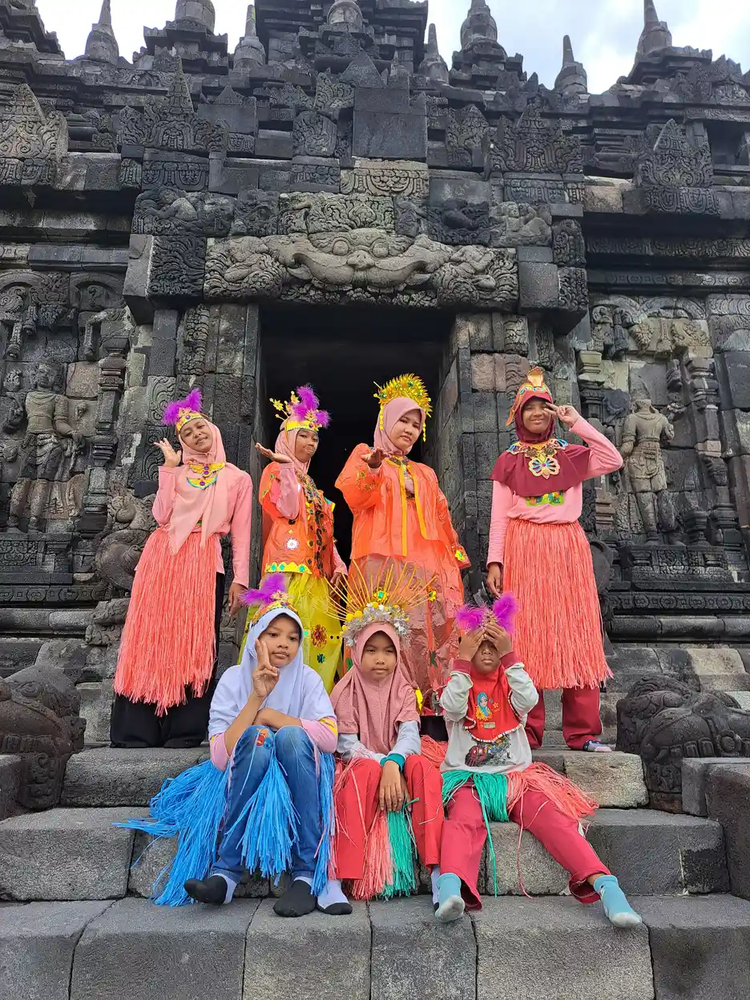
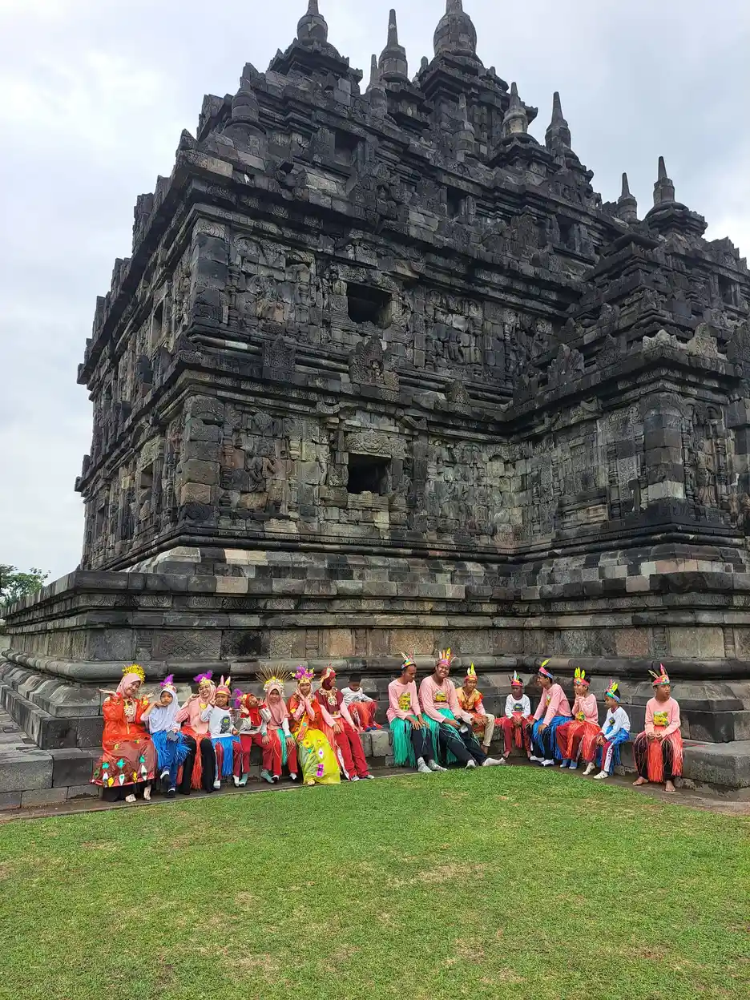
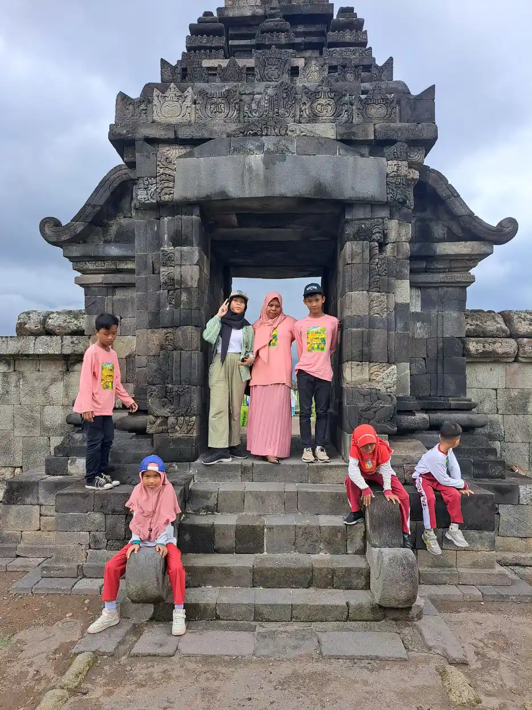
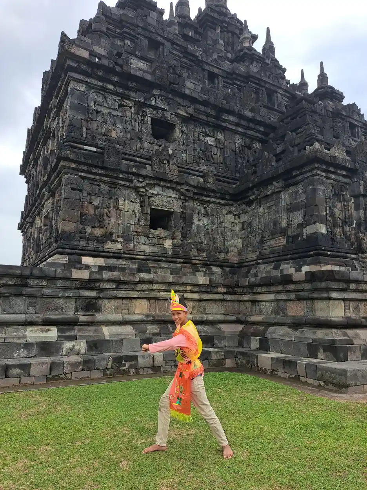
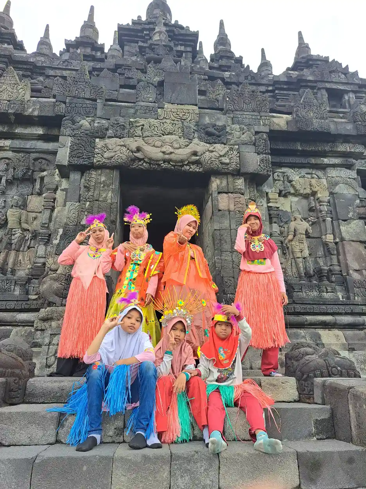
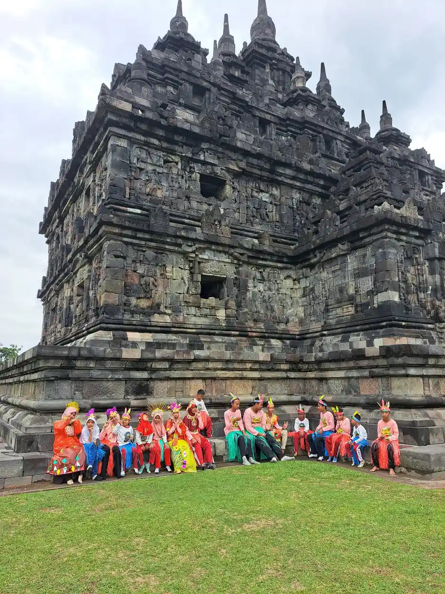
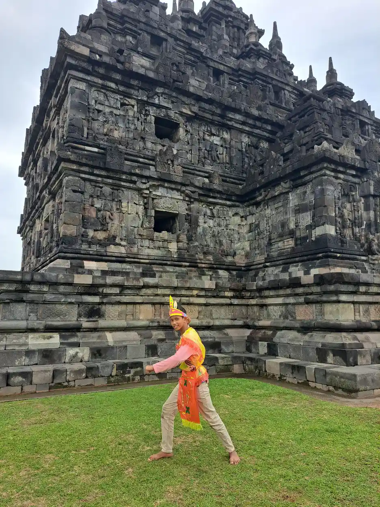
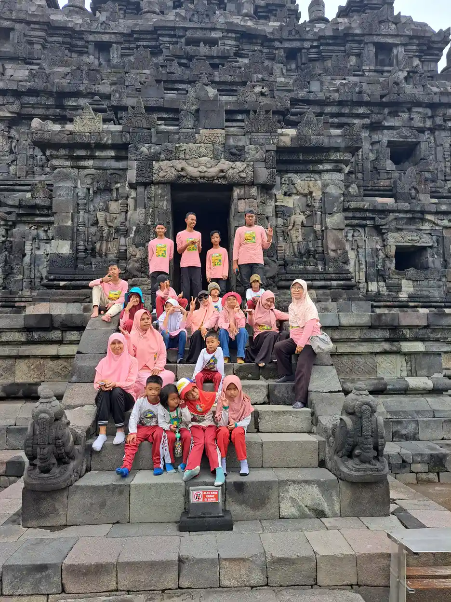
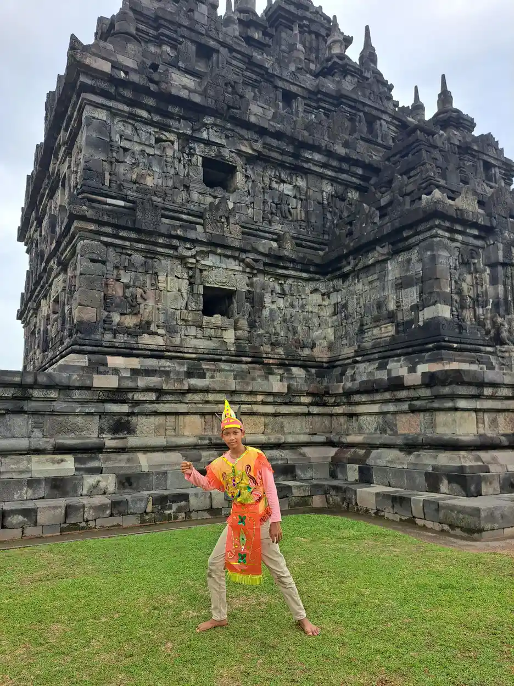

Wisata Edukasi
Menjelajah Warisan Budaya di Candi Plaosan
Anak-anak YUKA belajar mengenal sejarah dan budaya Nusantara melalui kunjungan ke Candi Plaosan. Dengan mengenakan kostum tradisional, mereka merasakan langsung keindahan warisan leluhur.










